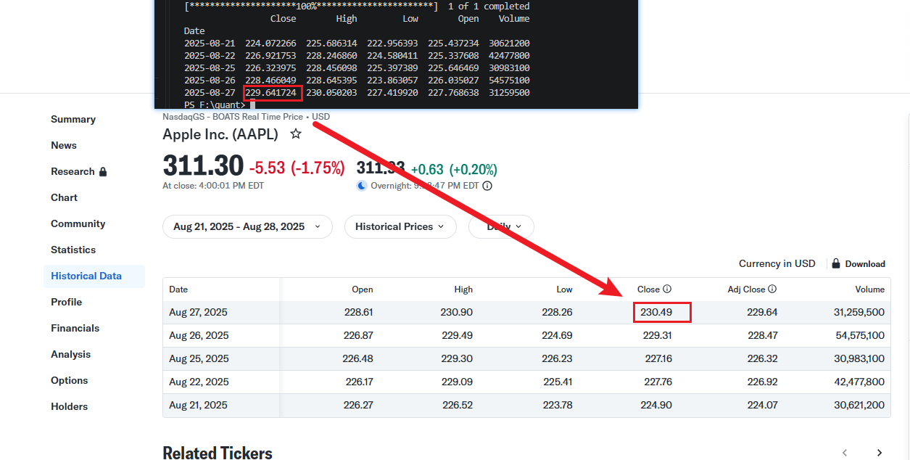
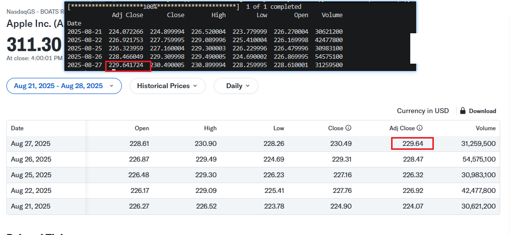
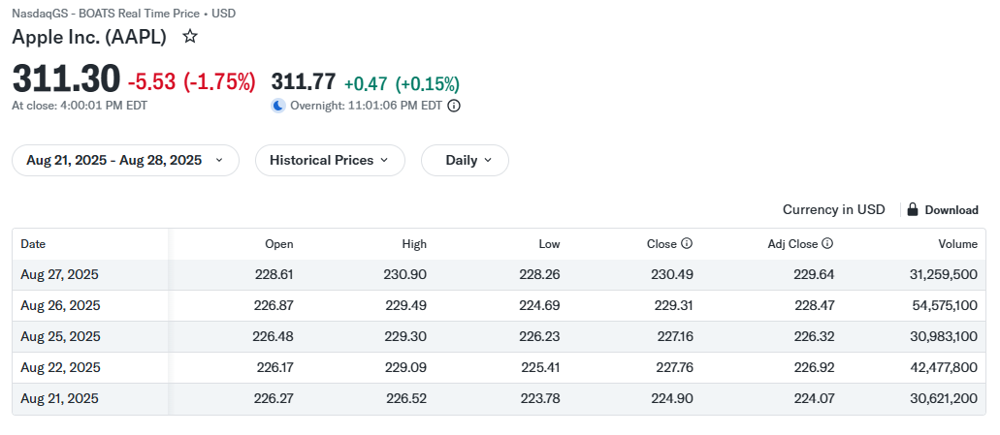
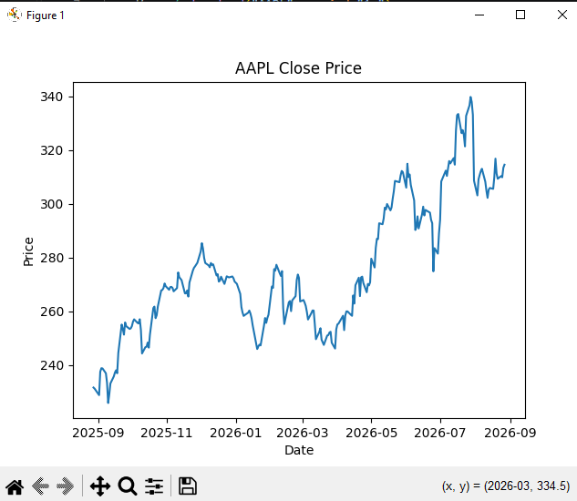
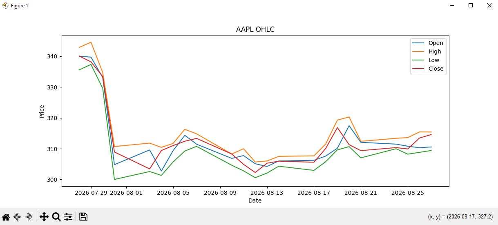
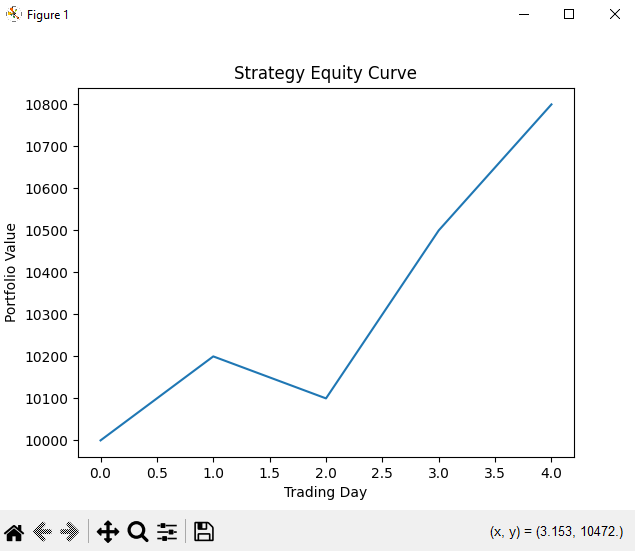
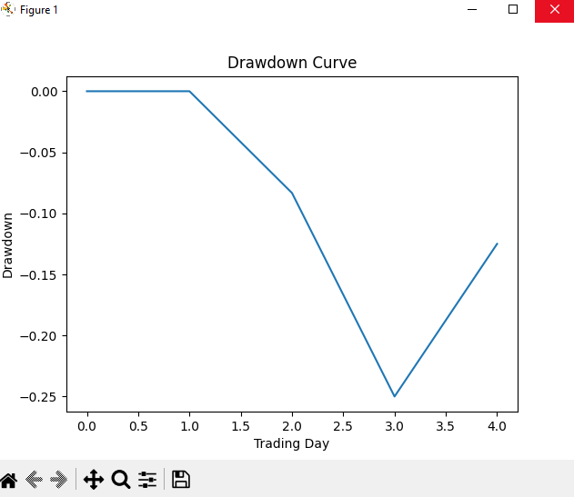

2026-10-26 发布 · 作者 chokebit3xp · 学习记录，非投资建议
一分钟看完
- 这是什么：我自学量化前两个阶段（Stage 0 Python / 数据基础，Stage 1 金融市场与股票数据基础）的完整学习笔记，按学习当天的记录原样保留，包含概念、代码、练习和踩坑。
- Stage 0 学的是：用 Python + Pandas 读取一只股票的历史数据，算收益率（Return）、累计收益、移动平均，并把结果画成图。
- Stage 1 学的是：看懂股票价格和交易的基本规则，包括买价 / 卖价（Bid / Ask）、价差、流动性、市价单 / 限价单 / 止损单、滑点、做空、保证金与杠杆，以及复权价和除权除息对历史价格的影响。
- 怎么读：篇幅很长，建议收藏。写这些笔记时我还没有路线图，所以 Stage 0 和 Stage 1 的内容是混在一起写的，按 day 顺序读完全没问题。
- 一句提醒：文中的 AAPL、MSFT、NVDA 等代码只是演示数据处理用的例子，不代表推荐，也不构成任何投资建议。
这份是我的 Stage 0-1 完整学习记录，按学习当天的笔记原样保留：概念、代码、练习、踩坑、参考链接都在。篇幅较长，建议收藏慢慢看。
两条贯穿始终的原则：一天学不了多少，但学一点就要好好掌握；忘记不可避免，忘了就回来复习。
使用说明（读前先看）
-
顺序：Stage 0/1 是最早写的，当时 roadmap 还没成型，中途微调过部分安排。你完全按 day 顺序学，或对照 roadmap 的顺序学，都没问题。
-
day 编号：day 编号是我学习当天的编号。有了 roadmap 以后，我把同一主题的内容归到了一起，所以 day10 的公司行为（Ticker、反向拆股、股票增发）放在了 Stage 1 里，编号会跳；Stage 0 和 Stage 1 里还有两个 day4-6，一个属于 Stage 1，一个属于 Stage 0。从后面的 Stage 开始，就都是按 roadmap 的顺序正常学了，不会再有这种情况。
-
代码：所有代码都是 100% 跑过的最小完整示例，你只需要能联网。境外数据源访问不了时，把代码丢给 AI 换成国内数据源库（比如 AKShare）即可，知识结构一模一样。
-
学习方式：不是一成不变的。后面你会发现不同 stage 我用了不同的教学结构——这是我刻意引导 AI 按实战目的调整的，拒绝纯理论纸上谈兵。
-
忘记很正常：学到基本面分析时我停下来反思过一次：按天流水账学下去，知识点串不起来。另外 Stage 0/1 当时觉得简单，没排在专注时段；后来调整为尽量早 9-10 点学，因为理解知识之间的关联非常耗注意力。
-
为什么用 AI 学：AI 教学的好处是很多知识能快速独立掌握，还能让 AI 帮你提出好问题、串联知识点。对比传统自学：我之前想学会计知识和阅读财报，读了《会计学：企业决策的基础（原书第17版）》（Jan R. Williams, Susan F. Haka, Mark S. Bettner），书很经典、示例生动，但自学时”学后面忘前面”，很多点想不到它结合实际用在哪。这正是我转向 AI 辅助学习的重要原因。
学习地图
按 day 的原始顺序排列，点右侧目录可以直接跳到对应的一天。
| Day | 内容 |
|---|---|
| Day 1 | DataFrame、Return（收益率）、cumprod() |
| Day 2 | Daily Return、Moving Average（MA20 / MA50）、Raw Close 与 Adjusted Close、Corporate Actions |
| Day 3 | 股票市场与交易基础：Bid、Ask、Bid-Ask Spread、Liquidity（流动性） |
| Day 3-2 | 交易：Market Order（市价单）、Market Price、Slippage（滑点） |
| Day 3-3 | Limit Order（限价单） |
| Day 4-1 | Stop Order（止损 / 触发订单） |
| Day 4-2 | Short Selling（做空）、Borrow、Buy to Cover |
| Day 4-3 | Margin（保证金）、Leverage（杠杆）、Margin Call |
| Day 4-4 | Trade Date、Settlement Date、T+1 |
| Day 4-5 · Stage 1 | Stock、Share、Market Cap（市值） |
| Day 4-6 · Stage 1 | Outstanding Shares、Float（流通股）、Exchange（交易所） |
| Day 10-1 | Ticker（股票代码） |
| Day 10-2 | Reverse Split（反向拆股） |
| Day 10-3 | Stock Issuance（股票增发） |
| Day 4-6 · Stage 0 | Python 基础：变量、List、for 循环、函数 |
| Day 5-1 | Dictionary（字典） |
| Day 6-1 | if / elif / else |
| Day 6-2 | 异常处理：try / except |
| Day 6-3 | module / package |
| Day 6-4 | 文件读写（file I/O） |
| Day 6-5 | 虚拟环境（Virtual Environment） |
| Day 6-6 | Git 基础 |
| Day 7-1 | NumPy Array |
| Day 7-2 | 向量化运算（Vectorized Operation） |
| Day 7-3 | 布尔索引（Boolean Indexing） |
| Day 7-4 | 基础统计：Mean / Max / Min / Std |
| Day 8-1 | pandas：loc |
| Day 8-2 | iloc |
| Day 8-3 | Filtering（筛选） |
| Day 8-4 | Sorting（排序） |
| Day 8-5 | groupby（分组） |
| Day 8-6 | merge（合并数据表） |
| Day 8-7 | concat（拼接 DataFrame） |
| Day 9-1 | shift() |
| Day 9-2 | rolling（滚动窗口） |
| Day 9-3 | resample()（时间序列重采样） |
| Day 9-4 | Missing Data（缺失数据） |
| Day 9-5 | Datetime（日期时间） |
| Day 9-6 | Visualization：Matplotlib |
| Day 9-7 | Line Chart（折线图） |
| Day 9-8 | Candlestick（K 线图） |
| Day 9-9 | Equity Curve（资金曲线） |
| Day 9-10 | Drawdown Curve（回撤曲线） |
Day 1
Python + Pandas + 一只股票的历史数据开始
DataFrame
import pandas as pd
df = pd.read_csv("data.csv")
#把 data.csv 里的表格数据读进内存，放到变量 df 里面。
#df = 一张可以用 Python 操作的 Excel 表
#示例
date open close volume
2026-08-18 100 105 10000
2026-08-19 105 110 15000
2026-08-20 110 108 12000df["return"] = df["close"].pct_change()
#根据每天的收盘价，计算每天的收益率，并创建一个叫 return 的新列。
#结果大概：
date close return
8/18 100 NaN
8/19 110 0.10
8/20 105 -0.0455
8/21 120 0.1429df["close"]
df["return"]
df["close"].mean()
df["close"].rolling(20).mean() #20日移动平均线（MA20）
df["close"].pct_change() #计算相邻价格变化率pct_change注意NaN处理：
参考https://pandas.pydata.org/docs/reference/api/pandas.DataFrame.pct_change.html
Return（收益率）
第 1 课：Return —— 股票到底赚了多少？
假设：
Day 1 $100
Day 2 $110
Day 3 $105
第一天到第二天：
(110 - 100) / 100 = 10%
第二天到第三天：
(105 - 110) / 110 ≈ -4.55%
所以：
价格：100 → 110 → 105
收益率：
+10%
-4.55%
这里有一个非常重要的区别：
价格变化 ≠ 投资收益。
Q：为什么不能直接把 +10% 和 -4.55% 相加？
很多刚开始学的人会想：
10% - 4.55% = 5.45%
这是错的。
因为第二天你的本金已经变了。
假设你最开始有：
$10,000
第一天：
$10,000 × 1.10
= $11,000
第二天：
$11,000 × (1 - 0.04545)
≈ $10,500
最终：
$10,500
也就是：
总收益 +5%
Q：总收益 +5% 就是 Compound Return
也就是：
复合收益 / 累计收益
计算方式是：
(1 + r₁) × (1 + r₂) × … × (1 + rₙ) - 1
刚才：
(1 + 10%) × (1 - 4.55%) - 1 ≈ 5%
这就是以后量化回测最核心的东西之一。
MVP示例：
import pandas as pd
data = {
"date": ["Day1", "Day2", "Day3"],
"close": [100, 110, 105]
}
df = pd.DataFrame(data)
df["return"] = df["close"].pct_change()
#1
print(df)
print("\n")
#2
df["wealth"] = (1 + df["return"]).cumprod()
print(df)
#输出
'''
date close return wealth
0 Day1 100 NaN NaN
1 Day2 110 0.10 1.10
2 Day3 105 -0.0455 1.05
'''cumprod()
cumprod = cumulative product
即：
累乘。
所以：
1.10 × 0.9545 ≈ 1.05
#数值来源
# 1.10 = 1 + 0.10
# 0.9545 = 1 - 0.0455意味着：
如果最开始投入 1.05。
如果投入 $10,000：
10000 × 1.05 = $10,500
小练习
假设：
Day 1 = $100
Day 2 = $120
Day 3 = $108
如果你投入 $10,000：
问题 1：
Day 1 → Day 2 的收益率是多少？
问题 2：
Day 2 → Day 3 的收益率是多少？
问题 3：
最后你的 $10,000 变成多少钱？
问题 4：
总收益率是多少？
实践真实数据1
AAPL 真实数据 → 收盘价 → 日收益率 → MA20 → MA50
环境：
pip install yfinance pandas matplotlibmvp：
import yfinance as yf
df = yf.download("AAPL", period="1y")
print(df.head())
print("")
print(df.columns)
'''output 需要代理
f:/quant/less3.py
[*********************100%***********************] 1 of 1 completed
Price Close High Low Open Volume
Ticker AAPL AAPL AAPL AAPL AAPL
Date
2025-08-20 225.178192 229.621784 224.939085 229.133582 42263900
2025-08-21 224.072266 225.686314 222.956393 225.437234 30621200
2025-08-22 226.921753 228.246860 224.580411 225.337608 42477800
2025-08-25 226.323975 228.456098 225.397389 225.646469 30983100
2025-08-26 228.466049 228.645395 223.863057 226.035027 54575100
MultiIndex([( 'Close', 'AAPL'),
( 'High', 'AAPL'),
( 'Low', 'AAPL'),
( 'Open', 'AAPL'),
('Volume', 'AAPL')],
names=['Price', 'Ticker'])
'''解释输出数据：
对应关系就是：
Close High Low Open Volume
↓ ↓ ↓ ↓ ↓
AAPL AAPL AAPL AAPL AAPL
↓ ↓ ↓ ↓ ↓
Date 收盘价 最高价 最低价 开盘价 成交量
2025-08-20 225.18 229.62 224.94 229.13 42263900你之所以觉得难看，是因为 yfinance 返回了两层列名。
可以把它变简单，因为你现在只研究 AAPL，所以可以把第二层 AAPL 去掉：
import yfinance as yf
df = yf.download("AAPL", period="1y")
df.columns = df.columns.droplevel("Ticker")
print(df.head())
'''output
PS F:\quant> & python f:/quant/temp.py
[*********************100%***********************] 1 of 1 completed
Price Close High Low Open Volume
Date
2025-08-20 225.178177 229.621769 224.939070 229.133567 42263900
2025-08-21 224.072281 225.686329 222.956408 225.437249 30621200
2025-08-22 226.921738 228.246845 224.580396 225.337593 42477800
2025-08-25 226.323959 228.456083 225.397374 225.646454 30983100
2025-08-26 228.466049 228.645395 223.863057 226.035027 54575100
'''如果想把 Price 这个名字也去掉：
import yfinance as yf
df = yf.download("AAPL", period="1y")
df.columns = df.columns.droplevel("Ticker")
df.columns.name = None #columns.name 是“列索引的名字”，不是数据列。
print(df.head())
'''output
PS F:\quant> & python f:/quant/temp.py
[*********************100%***********************] 1 of 1 completed
Close High Low Open Volume
Date
2025-08-21 224.072266 225.686314 222.956393 225.437234 30621200
2025-08-22 226.921753 228.246860 224.580411 225.337608 42477800
2025-08-25 226.323975 228.456098 225.397389 225.646469 30983100
2025-08-26 228.466049 228.645395 223.863057 226.035027 54575100
2025-08-27 229.641724 230.050203 227.419920 227.768638 31259500
'''
理解这 3 个概念：
DataFrame = 一张表
Column（列） = Close、High、Volume 等
Index（索引） = 左边的 Date，用于标识每一行
数据来源对应站点：https://finance.yahoo.com/quote/AAPL/history/
发现数据不是100%一样：

代码里的数值 ≈ 网页的 Adj Close
Yahoo Finance 网页给你两种价格
Close
当天实际收盘价。
Adj Close（Adjusted Close）
对分红、拆股等公司行为进行调整后的收盘价。
而你当前 yfinance 下载出来的 Close，实际上是调整后的价格。
因为 yfinance 默认可能返回调整后的价格（Adjusted Price），会考虑拆股、分红等公司行为。day2解释。
如果你想拿网页上看到的原始 OHLC（open|high|low|close），可以明确写：
df = yf.download(
"AAPL",
period="1y",
auto_adjust=False
)运行代码：
import yfinance as yf
df = yf.download(
"AAPL",
period="1y",
auto_adjust=False
)
df.columns = df.columns.droplevel("Ticker")
df.columns.name = None #columns.name 是“列索引的名字”，不是数据列。
print(df.head())
'''output
PS F:\quant> & python f:/quant/temp.py
[*********************100%***********************] 1 of 1 completed
Adj Close Close High Low Open Volume
Date
2025-08-21 224.072266 224.899994 226.520004 223.779999 226.270004 30621200
2025-08-22 226.921753 227.759995 229.089996 225.410004 226.169998 42477800
2025-08-25 226.323959 227.160004 229.300003 226.229996 226.479996 30983100
2025-08-26 228.466049 229.309998 229.490005 224.690002 226.869995 54575100
2025-08-27 229.641724 230.490005 230.899994 228.259995 228.610001 31259500
'''完全一样了：

基础概念：DataFrame 和 Series 的区别？
DataFrame
多列：
Date Close High Low
Day1 100 105 98
Day2 110 112 103
Series
一列：
Date Close
Day1 100
Day2 110
可以简单记：
DataFrame = 表 Series = 表中的一列
Day 2
Daily Return（日收益率）
Moving Average（移动平均线）
MA20 / MA50
Raw Close vs Adjusted Close（原始收盘价 vs 调整后收盘价）
Daily Return（日收益率）
import yfinance as yf
# 1. 下载数据
df = yf.download("AAPL", period="1y", auto_adjust=False)
# 2. 清理列索引（去除 Ticker 层级）
df.columns = df.columns.droplevel("Ticker")
df.columns.name = None
# 3. 计算收益率
df["return"] = df["Close"].pct_change()
# 4. 打印出来看看（加上这句才有输出！）
print(df[["Close", "return"]].head(10))Output: return计算公式已给出，pct_change() 就是在帮我们做这个计算。
PS F:\quant> & python f:/quant/day2-return1.py
[*********************100%***********************] 1 of 1 completed
Close return
Date
2025-08-21 224.899994 NaN
2025-08-22 227.759995 0.012717 = (227.759995 - 224.899994)/224.899994
2025-08-25 227.160004 -0.002634
2025-08-26 229.309998 0.009465
2025-08-27 230.490005 0.005146
2025-08-28 232.559998 0.008981
2025-08-29 232.139999 -0.001806
2025-09-02 229.720001 -0.010425Moving Average
现在假设最近 5 天收盘价：
100
110
105
115
1205 日平均：
(100 + 110 + 105 + 115 + 120) / 5
= 110但是新的一天又来了一个价格：
125
那么新的 5 日平均就只看：
110
105
115
120
125所以它会随着时间不断向前移动。
这就是：
Moving Average（移动平均线）
MA20 和 MA50
rolling功能：拉取前多少天数据
https://pandas.pydata.org/docs/reference/api/pandas.DataFrame.rolling.html
import yfinance as yf
import pandas as pd
# 1. 下载数据（auto_adjust=True 让列名保持简单，没有多级索引）
df = yf.download("AAPL", period="6mo", auto_adjust=True)
# 2. 核心计算（就这两行，其他全是多余的）
df["Return"] = df["Close"].pct_change()
df["MA20"] = df["Close"].rolling(20).mean()
# 3. 查看结果
print(df[["Close", "Return", "MA20"]].tail(10))Output:
PS F:\quant> & python f:/quant/day2-MA2.py
[*********************100%***********************] 1 of 1 completed
Price Close Return MA20
Ticker AAPL
Date
2026-08-07 313.059998 0.002945 323.152800
2026-08-10 308.260010 -0.015332 322.713972
2026-08-11 304.910004 -0.010867 322.230038
2026-08-12 302.250000 -0.008724 320.981648
2026-08-13 305.260010 0.009959 319.596007
2026-08-14 305.929993 0.002195 318.219887
2026-08-17 305.589996 -0.001111 317.183958
2026-08-18 310.029999 0.014529 316.312579
2026-08-19 316.829987 0.021933 315.873619
2026-08-20 311.299988 -0.017454 315.369476如果计算MA20，没有前19天数据，输出是NaN。
解释api：
df["MA20"] = df["Close"].rolling(20).mean()
#rolling(20)
可以把 rolling(20) 想象成一个长度为 20 的探照灯。
这个探照灯固定照在当前这一行（今天）。
它同时往回照 19 行（过去的 19 个交易日）。
所以，它总共罩住了 20 个数据点（今天 + 过去 19 天）
#mean()
当探照灯罩住这 20 个价格后，.mean() 就是把这 20 个价格全部加起来，然后除以 20，得到一个平均数。Raw Close

就是股票当天真实的收盘成交价。
比如网页：
2025-08-22
Close = 227.76
这表示：
当天市场收盘时，AAPL 的价格是 $227.76。
Adjusted Close
它不是当天实际成交的价格。
它是：
把过去的价格按照公司行为进行调整后的价格。
主要考虑：
-
Stock Split：股票拆分
-
Dividend：股息/分红
对应站点图中：
2025-08-22
Raw Close 227.76
Adjusted Close 226.92
所以：
227.76 ≠ 226.92
但 226.92 并不是说当天股票实际以 $226.92 收盘。
当天实际收盘价仍然是 $227.76。
Corporate Actions
公司行为
其中我们现在只需要知道两个：
Stock Split（股票拆分）
例如：
拆分前：
1股 × $100
2-for-1 split 后：
2股 × $50
你的资产总价值没有因为拆分凭空增加。
Dividend（股息/分红）
公司把一部分现金发给股东。
这会影响股票价格和长期投资收益的计算。
Q：为什么量化特别关心 Adjusted Close？
A：
假设：
Day 1：$100
Day 2：$90如果中间发生了分红，仅仅看：
100 → 90可能会错误地认为：
股票亏了 10%。
但投资者实际上还收到了分红。
所以研究：
长期收益 / 回测 / 总回报
时，通常需要考虑公司行为。
Day 3 · 股票市场与交易基础
1.Bid
2.Ask
3.Bid-Ask Spread
之前计算的：
Close → Return → MA → 策略
都是基于历史数据。
但当我们以后进入：
回测 → Paper Trading → 实盘
你必须面对一个现实：
你想买股票时，不一定能以你看到的价格成交。
这就是 Bid / Ask 开始发挥作用的地方。
bid - 买方愿意出的最高价(报价)
假设 AAPL 当前市场：
Bid = $226.90
意思是：
当前有人愿意用最高 $226.90 买你的股票。
注意：
Bid 是买方报价。
Ask —— 卖方愿意卖的最低价（要价）
例如：
Ask = $227.00
意思是：
当前有人愿意最低用 $227.00 卖给你。
所以：
买方 卖方
Bid $226.90 | Ask $227.00
↑ ↑
买 卖Bid-Ask Spread
两者之间的差：
ask - bid
$227.00 - $226.90 = $0.10这就是：
Bid-Ask Spread（买卖价差）
它可以简单理解成：
你立即买入和立即卖出之间天然存在的价格差。
Q：为什么量化必须学这个Spread？
A：
假设你的策略回测：
预期收益 = 0.05%但是：
Bid-Ask Spread = 0.10%那么你可能发现：
策略在电脑里赚钱，真实交易却可能亏钱。
所以以后我们学习 Backtesting 时，会加入：
理论收益
↓
Transaction Cost
↓
Slippage
↓
真实可实现收益这也是为什么我把它放在现在，而不是等到实盘才讲。
Q：Spread %理解，区别于Spread。
A：
Bid-Ask Spread 本身首先是一个价格差，通常用“美元”表示：
Bid = $226.90
Ask = $227.00
Spread = $227.00 - $226.90
= $0.10所以：
Spread = $0.10/股
但为了比较不同价格的股票，我们还可以把它表示成百分比：
Spread % = (Ask - Bid) / Mid Price × 100%其中 Mid Price（中间价）：
(226.90 + 227.00) / 2
= 226.95所以：
Spread % = 0.10 / 226.95
≈ 0.044%Spread %和spread关键区别
Spread = $0.10 ← 价格单位
Spread % ≈ 0.044% ← 百分比单位而我之前写的：
策略预期收益 = 0.05%
Spread = 0.10%这里比较的是百分比形式的 Spread，不是说 $0.10 本身等于 0.10%。
另外还有一个很重要的地方：买入和卖出各跨越一次价差，所以实际交易成本不能简单理解成“只扣一个 Spread”。我们后面学交易成本和滑点时再详细拆。
你现在只需要记住：
Spread 是价格差；Spread % 是把价格差除以价格后得到的相对价差。
Liquidity-流动性
市场“现在”到底有人愿意用什么价格买卖。
Liquidity = 流动性 理解：
一项资产能够快速买卖，而且不会因为你的交易本身导致价格明显变化的能力。
例如：
AAPL
假设市场上：
Bid Ask
$226.90 $227.00而且附近有大量买卖订单。
你想买100股：
10 股 @ $227.20
20 股 @ $227.00
100 股 @ 227.10通常比较容易成交，价格也不会因为这 100 股产生巨大变化。
→ 流动性高
一只交易非常冷清的小股票
可能：
Bid Ask
$10.00 $10.50而且卖方只有：
10 股 @ $10.50
20 股 @ $10.80
100 股 @ $11.20你想买：
100 股
结果可能变成：
10 股 × $10.50
20 股 × $10.80
70 股 × $11.20你的平均成交价就被推高了。
→ 流动性低
Q：流动性高低主要看什么？
这里先掌握两个指标：
1.Trading Volume
Volume = 成交量
例如：
AAPL
Daily Volume = 50,000,000 shares说明一天有大量股票发生交易。
通常：
成交量越大 → 流动性往往越好
但注意：
Volume ≠ Liquidity
成交量只是流动性的一个重要参考，并不是流动性的完整定义。
2.Bid-Ask Spread
我们刚刚学过：
Bid = $226.90
Ask = $227.00
Spread = $0.10通常：
Spread 越小 → 流动性越好
所以你可以暂时形成这个直觉：
高流动性
↓
大量交易
↓
订单比较充足
↓
Bid / Ask 接近
↓
Spread 较小
↓
大额交易也比较不容易冲击价格Q：为什么量化必须关心 Liquidity？
因为你回测里的：
Buy $100
Sell $110并不意味着你现实中一定能够：
$100 买入
$110 卖出如果股票流动性很差，你自己的订单就可能改变市场价格。
这叫：
Market Impact（市场冲击）
例如：
回测：
买入 10,000 股
↓
假设全部以 $100 成交现实：
前面只有 1,000 股 @ $100
之后：
2,000 股 @ $100.20
3,000 股 @ $100.50
4,000 股 @ $101最后你的平均成交价可能远高于 $100。
因此：
回测收益 ≠ 实际可获得收益
这就是为什么后面的 Backtesting 阶段必须加入：
Commission
Transaction Cost
Slippage
Market Impact
Liquidity三个概念串起来
Bid
↓
买方最高报价
Ask
↓
卖方最低报价
Spread
↓
Ask - Bid
Liquidity
↓
你能不能大量、快速地交易，
而不会明显影响价格| 市场 | Spread | 交易量 | 流动性 |
|---|---|---|---|
| AAPL | 小 | 大 | 高 |
| 冷门小盘股 | 大 | 小 | 低 |
但不要把“Volume 大 = Liquidity 一定高”当成严格公式。这是我们后面学习 Market Impact 时要进一步理解的。
Day 3-2 · 交易
-
Market Order
-
Market Price
-
Slippage
Market Order：市价单
Market Order = 立即成交的订单
你的意思是：
“我现在就要买/卖，优先保证成交，不指定一个固定价格。”
例如当前：
Bid = $226.90
Ask = $227.00你发出：
Buy 100 AAPL at Market
你不是告诉市场：
“我只愿意 $227 买。”
而是：
“现在帮我买 100 股，尽快成交。”
对于立即买入，你通常会去吃掉卖方的 Ask。
Market Price：市场价格并不是一个唯一数字
这是一个很容易产生误解的地方。
假设订单簿：
卖方 Ask
$227.20 1,000 股
$227.10 500 股
$227.00 100 股
----------------
买方 Bid
$226.90 800 股
$226.80 1,000 股现在你想：
Market Buy 300 股市场可能这样成交：
100 股 × $227.00
200 股 × $227.10所以你的平均成交价格：
(100×227.00 + 200×227.10) / 300
= $227.0667你并没有得到一个统一的：
$227.00而是不同价格成交。
这就是为什么我们不能简单地把：
“当前股价 = $227”
理解成：
“我可以买任意数量的股票，而且全部 $227 成交。”
Slippage：滑点
Slippage = 滑点
简单理解：
你原本预期的成交价格，与实际成交价格之间的差异。
刚才：
你看到 Ask = $227.00你可能觉得：
“我买入应该是 $227。”
但你要买 300 股：
100 × $227.00
200 × $227.10平均：
$227.0667那么：
预期价格 ≈ $227.00
实际平均价格 ≈ $227.0667
Slippage ≈ $0.0667 / 股Q：为什么量化必须学 Slippage？
因为你以后写策略：
Signal → Buy
#理解Signal：某个预先定义的条件满足 → 产生买入信号 → 执行买入。电脑可能计算：
理论买入价 = $100然后回测认为：
100 → 110
收益 = 10%但现实交易：
Signal
↓
下单
↓
实际成交 $100.20卖出时也可能发生滑点。
因此：
回测价格 ≠ 实际成交价格
这就是我们之前为什么一直强调：
历史 Close
↓
策略
↓
回测最终必须逐渐加入：
Commission
Transaction Cost
Slippage
Market Impact才能越来越接近真实交易。
小结
Market Order
↓
“我要尽快成交，不指定价格”
Market Price
↓
市场上并不存在一个保证你任意数量都能成交的单一价格
Slippage
↓
预期成交价格 ≠ 实际成交价格Q：下载的数据表单历史数据通常只有 Open/High/Low/Close，不一定有当时的 Bid/Ask。
A：
我们最开始的基础回测，通常会先用 Close / Open 等历史价格作为成交价格的近似；进入更真实的回测后，再加入 Bid-Ask Spread + Slippage + Transaction Cost。
“回测价格”不等于“真实成交价格”。
注：后续MVP示例代码中 yfinance 获取的历史数据主要是 OHLC，并没有完整的历史 Bid/Ask，所以入门回测先用 Close/Open 等价格近似。
Day 3-3 · Limit Order（限价单）
-
Limit Order
-
Limit Price
-
成交 / 不成交
Limit Order 是什么？
Limit Order = 限价单
核心思想：
我规定一个“我能接受的最高/最低价格”，超过这个价格就不要成交。
例如现在：
Bid = $99.90
Ask = $100.00你想买入，但你觉得 $100 太贵。
你可以下：
Buy 100 shares
Limit Price = $99.50意思是：
我最多愿意用 $99.50 买。
Limit Price
Limit Price = 限价
对于买入：
你愿意支付的最高价格。
例如：
Buy Limit = $99.50市场价格：
$100 → 不买
$99.80 → 不买
$99.50 → 可以买
$99.30 → 可以买注意：
限价单不是保证成交，而是限制成交价格。
成交 vs 不成交
假设：
当前 Ask = $100你下：
Buy Limit $99.50那么：
Ask $100
↓
高于你的最高接受价格
↓
❌ 暂时不成交后来市场下跌：
Ask = $99.50那么：
Ask $99.50
↓
达到你的限价
↓
✅ 可以成交如果市场直接从：
$100 → $98也可能发生价格变化和订单簿变化，实际成交价格需要看当时市场上的可成交订单。
Q：Market Order vs Limit Order
| Market Order | Limit Order | |
|---|---|---|
| 核心目标 | 尽快成交 | 控制价格 |
| 价格 | 不指定具体价格 | 指定最高/最低价格 |
| 保证成交 | 更容易成交 | ❌ 不保证 |
| 主要风险 | Slippage | 不成交 |
一句话：Market Order：我要现在买到。 Limit Order：价格合适我才买。
Q：为什么量化要学 Limit Order？
因为以后我们的策略：
Signal
↓
Buy并不意味着一定要：
Market Order真实策略可能规定：
Signal
↓
Limit Order
↓
等待合适价格但这样又产生一个新的问题：
如果一直没有成交怎么办？
这就会涉及订单执行（Execution）和回测中的成交假设。
Day 4-1 · Stop Order（止损/触发订单）
-
Stop Order
-
Stop Price
-
Stop-Loss
Stop Order = 触发订单
它的核心逻辑是：
价格达到某个条件 → 订单被触发 → 变成可执行的订单。
例如你持有 AAPL：
当前价格 = $100你担心价格大跌，于是设置：
Stop Price = $95意思是：
如果价格跌到 $95 左右，就触发我的卖出订单。
注意：
Stop Price 不是一定的成交价格。
Stop Price
Stop Price = 触发价格
例如：
当前价格
$100
↓
$98
↓
$96
↓
$95 ← Stop Price
↓
触发订单所以：
Stop Price
↓
负责“什么时候触发”而不是：
Stop Price
↓
保证“以这个价格成交”这是非常重要的区别。
Stop-Loss = 止损
它是一种使用 Stop Order 来限制亏损的常见方法。
例如：
买入价格 = $100
Stop Price = $95你的想法是：
如果价格明显跌破 $95，就退出这个仓位，避免继续承担下跌风险。
但有一个非常重要的问题
假设：
Stop Price = $95市场突然暴跌：
$96
↓
$90你的 Stop Order 被触发后，不代表一定 $95 成交。
可能：
Stop Price = $95
实际成交 = $90.50这就是因为：
Stop Order 解决的是“什么时候触发”，不是“保证什么价格成交”。
Q：和 Limit Order 对比
| 订单 | 核心 |
|---|---|
| Market Order | 我要现在成交 |
| Limit Order | 价格达到我的要求才成交 |
| Stop Order | 价格达到触发条件后才启动订单 |
Limit 控制价格；Stop 控制触发条件；Market 优先成交。
Day 4-2
-
Short Selling
-
Borrow（借入股票）
-
Cover / Buy to Cover（买回平仓）
Short Selling（卖空 / 做空）
普通买入是：
买入 $100
↓
上涨到 $120
↓
卖出
↓
赚 $20这是：
Long（做多）
做空则反过来：
借入股票
↓
以 $100 卖出
↓
价格跌到 $80
↓
买回股票
↓
归还股票
↓
赚 $20所以：
做空的目标是“先卖出，后买回”，从价格下跌中获利。
Borrow（借入股票）
你不能凭空卖出自己没有的股票。
做空通常需要：
Broker #经纪人
↓
借给你 1 股 AAPL
↓
你卖出 $100之后你必须归还：
1 股 AAPL注意：你欠的是股票数量，不是 $100。
Cover / Buy to Cover（买回平仓）
如果 AAPL 从：
$100
↓
$80你买回 1 股：
$80然后把这 1 股还给券商。
你的毛利润：
$100 - $80 = $20这叫：
Cover / Buy to Cover（买回平仓）
Q：做空最大的特点
做多：
最多亏多少钱？
≈ 你的本金例如：
$100 → $0最多亏 $100。
但做空：
$100
↓
$200
↓
$500
↓
……理论上价格可以无限上涨。
所以：
做空的潜在亏损理论上是无限的。
这也是为什么做空比普通买入复杂得多。
Day 4-3
-
Margin
-
Leverage
-
Margin Call
Margin（保证金）
Margin 可以简单理解为：
向券商借钱，用比自己本金更大的资金进行交易。
例如你有：
自己的钱 = $5,000券商允许你再借：
$5,000那么你可以控制：
$10,000的股票。
这就是 Margin Trading（保证金交易）。
Leverage（杠杆）
杠杆描述：
你控制的资产规模 ÷ 你自己的资金。
刚才：
控制资产 = $10,000
自己的资金 = $5,000所以：
Leverage = 10,000 / 5,000
= 2×为什么危险？
假设股票上涨 10%：
$10,000 × 10% = +$1,000相对于你的 $5,000 本金：
$1,000 / $5,000 = +20%所以：
杠杆会放大收益，也会放大亏损。
Margin Call（追加保证金通知）
如果你的投资不断亏损，你自己的资金比例可能低到券商规定的最低要求。
例如：
股票价值下降
↓
你的权益下降
↓
保证金比例过低
↓
Margin Call券商可能要求你：
追加资金，或者减少仓位。
如果你不处理，券商在某些情况下可能直接卖掉你的持仓。
小结
最重要的理解
Margin
↓
借钱/借助保证金机制交易
Leverage
↓
放大资金使用规模
Margin Call
↓
亏损导致保证金不足
↓
需要补钱或减仓和做空的关系
你刚学的 Short Selling 经常也会涉及保证金。
所以不要把：
Margin = 做空
理解成一回事。
Margin 是资金/抵押机制；Short Selling 是交易方向。
Day 4-4
-
Trade Date
-
Settlement Date
-
T+1
Trade Date（交易日）
你实际下单并成交的那一天。
例如：
Monday
你买入 100 股 AAPL
↓
订单成交这一天就是 Trade Date。
Settlement Date（结算日）
交易成交后，并不是所有权和资金转移瞬间就完全完成。
Settlement = 交易正式完成交割的过程。
简单理解：
Trade
↓
买卖双方达成交易
↓
Settlement
↓
股票和资金完成最终交割T+1
T = Trade Date（交易日）
T+1 = 交易日后的下一个工作日完成结算。
例如：
周一：买入并成交
↓
T = 周一
周二：
↓
T+1 = 结算美国股票市场目前采用 T+1 settlement。
Q：为什么量化要知道这个？
因为真实交易系统不能只考虑：
Signal
↓
Buy还要考虑：
Signal
↓
Order
↓
Execution
↓
Settlement
↓
Portfolio例如以后你自己写交易系统，需要知道：
什么时候订单成交？什么时候资金/股票真正结算？账户里的可用资金应该怎么算？
Day 4-5 · Stage 1
Stock
Share
Market Cap
Stock = 股票 / 股权
它表示：
你拥有一家公司一部分所有权。
例如你买了 Apple 的股票，你就拥有 Apple 的一小部分权益。
所以不要把 Stock 简单理解成“一个价格”。
Stock
↓
代表公司所有权的一部分Share = 一股
它是把公司的股权划分成的一个个单位。
例如假设一家公司发行：
10,000,000 shares你拥有：
100 shares那么你拥有：
100 / 10,000,000
= 0.001%所以：
Stock 是“股票/股权”这个概念，Share 是具体的一股股单位。
可以类比：
Company
↓
Stock（股权）
↓
被划分成很多 Shares（一股一股）Market Cap = Market Capitalization = 市值
最重要的公式：
Market Cap
= Share Price × Shares Outstanding
= 股价 * 发行在外的股票数量例如：
股价 = $100
发行在外的股票 = 1,000,000 股那么：
Market Cap
= $100 × 1,000,000
= $100,000,000也就是：
这家公司按照当前股票价格计算出来的总股权市场价值。
小结
Stock
↓
公司的股权
Share
↓
股权被划分成的一股一股
Market Cap
↓
每股价格 × 发行在外的股票数量
↓
公司股权的市场价值一个非常重要的区别
Market Cap ≠ 公司真正值多少钱。
它只是：
市场当前给这家公司股权部分的定价。
例如公司：
Share Price = $100
Shares Outstanding = 1 billion那么：
Market Cap = $100 billion这并不意味着有人真的拿 $100 billion 把整个公司买下来。
后面学习 Enterprise Value（企业价值） 时，我们会进一步区分。
Day 4-6 · Stage 1
Outstanding Shares
Float
Exchange
Outstanding Shares（发行在外股份）
目前由股东持有、已经发行出去的股票总数量。
例如：
公司总共发行：
1,000,000 股
目前这些股票仍然在股东手中：
900,000 股那么：
Outstanding Shares = 900,000它和刚才的 Market Cap 直接相关：
Market Cap
= 股价 × Outstanding SharesFloat（流通股）
Float = 公众流通股 / 自由流通股
它指：
市场上实际可以被公众自由交易的那部分股票。
例如：
Outstanding Shares = 1,000,000其中：
公司内部人士长期持有 = 200,000
公众可以自由交易 = 800,000那么大致：
Float = 800,000所以：
Outstanding Shares
↓
所有发行在外、由股东持有的股票
Float
↓
其中实际可以在市场自由交易的部分因此通常：
Float ≤ Outstanding Shares为什么量化需要知道 Float？
因为它和流动性有关。
假设：
公司 A
Outstanding = 1 亿
Float = 9,000 万
公司 B
Outstanding = 1 亿
Float = 1,000 万虽然两家公司发行在外的股票数量一样，但 B 真正可以自由交易的股票少很多，可能更容易出现：
流动性不足、价格波动更大、交易冲击更明显。
Exchange（证券交易所）
Exchange = 证券交易所
它是股票等证券进行交易的市场基础设施。
例如：
NYSE
NASDAQ你可以先把它理解成：
股票买卖发生的交易场所/市场。
例如：
AAPL
↓
NASDAQ
↓
投资者进行买卖注意：
Exchange 不是 Broker（券商）。
简单区分：
Exchange
↓
提供证券交易市场
Broker
↓
帮助你接入市场、提交订单你以后做量化交易时，会同时遇到：
你的策略
↓
Broker API
↓
Exchange / Market
↓
订单执行小结
Outstanding Shares
↓
发行在外的股票总量
Float
↓
其中可以自由交易的部分
Exchange
↓
这些股票进行交易的市场Ticker（股票代码）
Ticker / Ticker Symbol = 股票代码
它是交易市场用来识别某只证券的简短代码。
例如：
Apple → AAPL
Microsoft → MSFT
Amazon → AMZN所以当我们之前写：
yf.download("AAPL")这里的：
AAPL就是 Ticker。
为什么需要 Ticker？
公司名称可能比较长，而且不同市场可能存在名称相似的证券。
交易系统需要一个简短、明确的标识：
AAPL
↓
Apple 这只股票所以在量化程序里你会经常看到：
ticker = "AAPL"然后：
Ticker
↓
获取数据
↓
计算指标
↓
生成信号
↓
回测注意：Ticker 不等于公司
这是一个重要区别：
Company
Apple Inc.
↓
Ticker
AAPL
↓
Security / Stock
Apple 的股票Ticker 是识别证券的代码，不是公司的名字。
而且同一家公司在不同交易所、不同证券类型下可能存在不同 ticker，因此实际数据分析时还需要关注交易所和证券类型。
Day 10-1 · Ticker（股票代码）
Ticker 是什么？
Ticker = 用来唯一标识一只股票的交易代码。
例如：
Apple → AAPL
Microsoft → MSFT
NVIDIA → NVDA所以你之前写过：
yf.download("AAPL", period="1y")这里的：
AAPL就是 Ticker。
为什么量化必须认识 Ticker？
因为量化系统处理的不是：
“苹果公司”而通常是：
AAPL例如你的股票池：
stocks = ["AAPL", "MSFT", "NVDA"]然后程序可以批量获取：
Ticker
↓
价格数据
↓
指标
↓
信号
↓
回测Ticker 就相当于股票数据中的身份证/索引标识。
最小完整 MVP
import yfinance as yf
def main():
# Define the stock ticker.
ticker = "AAPL"
# Download historical stock data.
df = yf.download(ticker, period="1mo")
print(df.head())
if __name__ == "__main__":
main()这里：
ticker = "AAPL"就是把股票代码保存到变量 ticker 中。
然后：
yf.download(ticker, period="1mo")把它传给数据接口。
记住
Ticker
↓
股票在交易市场中的代码你之前一直使用的：
AAPL就是一个 Ticker。
Day 10-2 · Explain Reverse Split（反向拆股）
Reverse Split 是什么？
Reverse Stock Split = 反向拆股
核心：
公司把多股合并成一股，从而提高每股价格，但公司的总市值理论上不因此改变。
例如 1-for-10 reverse split：
拆股前：
10 股 × $2 = $20
反向拆股后：
1 股 × $20 = $20所以：
股票数量 ↓ 10 倍
每股价格 ↑ 10 倍
总价值 ≈ 不变为什么公司要 Reverse Split？
最常见的原因之一：
提高股价，避免股价过低。
例如某股票：
$0.50 / 股进行 1-for-10 reverse split：
$0.50 × 10 = $5.00股东原来的：
1000 股变成：
100 股理论上总价值仍然一样。
为什么量化必须学？
因为你处理历史价格时，如果忽略 Corporate Actions（公司行为），可能误以为：
$2 → $20是股票突然涨了 900%。
实际上可能只是：
1-for-10 Reverse Split所以你之前学过的：
Raw Close vs Adjusted Close
以及：
Corporate Actions
在这里就联系起来了。
记忆
Stock Split
↓
1 股 → 多股
股价 ↓
Reverse Split
↓
多股 → 1 股
股价 ↑重点：反向拆股本身不是创造财富，而是改变“股数 × 每股价格”的表示方式。
Day10-3 Buyback（股票回购）
Buyback 是什么？
Buyback = Share Buyback / Stock Repurchase（股票回购）
公司用自己的现金，从市场上买回自己发行的股票。
例如公司原来有：
1,000 万股公司回购：
200 万股那么市场上的流通股票数量就会减少。
回购前：10,000,000 股
↓
公司回购 2,000,000 股
↓
剩余：8,000,000 股为什么这对投资者重要？
假设公司盈利：
净利润 = $100 million回购前：
10 million shares那么：
EPS = $100m / 10m
= $10回购后：
8 million shares如果利润不变：
EPS = $100m / 8m
= $12.50所以：
回购减少股票数量，在利润不变的情况下，可以提高 EPS（每股收益）。
为什么量化必须学？
因为你分析股票时经常会看到：
Revenue
Net Income
EPS
Shares Outstanding如果公司不断回购股票：
Shares Outstanding ↓
↓
EPS 可能 ↑因此看到 EPS 增长时，不能只问：
公司利润增长了吗？
还应该问：
股票数量是不是减少了？
这就是 Buyback 和你之前学的 Outstanding Shares 的联系。
记忆
Buyback
↓
公司买回自己的股票
↓
Shares Outstanding ↓
↓
EPS 可能 ↑注意：回购并不自动意味着股价一定上涨。
Day 10-3 · Stock Issuance（股票增发）
Stock Issuance 是什么？
Stock Issuance = 公司发行新股票。
核心：
公司创造并出售新的股票，从投资者那里获得资金。
例如公司原来：
1,000 万股发行新股：
200 万股那么：
原来：10,000,000 股
↓
增发： 2,000,000 股
↓
现在：12,000,000 股这和刚学的 Buyback 正好相反：
Buyback
公司买回股票
→ Shares Outstanding ↓
Stock Issuance
公司发行新股票
→ Shares Outstanding ↑为什么公司要增发？
最常见的目的：
融资。
例如公司需要 $200 million 扩建业务，可以发行新股获得资金。
但原股东需要注意：
股票数量 ↑
↓
每股代表的公司权益可能被稀释
↓
Dilution（稀释）为什么量化必须学？
因为你分析 EPS 时：
EPS = Net Income / Shares Outstanding如果：
Net Income 不变
Shares Outstanding ↑那么：
EPS ↓所以以后看到公司 EPS 变化时，要同时关注：
利润变化 + 股票数量变化。
记忆
Buyback
公司买股票
→ 股数减少
Stock Issuance
公司发股票
→ 股数增加
→ 可能产生 DilutionDay 4-6 · Stage 0 Python 相关
变量
# 变量赋值与使用
name = "小明"
age = 18
print(name, "今年", age, "岁")-
变量是用来存储数据的“名字”，不需要声明类型，直接赋值即可。
-
name 存储字符串 “小明”，age 存储整数 18。
-
print() 输出多个值，用逗号分隔，默认以空格连接。
运行结果：小明 今年 18 岁
List-方括号
# 列表的创建、访问和修改
fruits = ["苹果", "香蕉", "橘子"]
print(fruits[0]) # 访问第一个元素
fruits.append("西瓜") # 添加元素
print(fruits) # 输出整个列表-
列表是用 [] 包裹的有序集合，可以存放任意类型的元素。
-
通过索引 [0] 访问第一个元素（索引从 0 开始）。
-
append() 方法在列表末尾添加新元素。
运行结果:
苹果['苹果', '香蕉', '橘子', '西瓜']For
# for 循环遍历列表
scores = [90, 85, 78]
for s in scores:
print("分数：", s)-
for 循环可以遍历任何可迭代对象（如列表、字符串、range 等）。
-
每次循环，变量 s 依次取列表中的每个元素，并执行循环体。
-
这里依次打印每个分数。
运行结果：
分数： 90
分数： 85
分数： 78函数
# 定义并调用一个简单的函数
def greet(name):
return "你好，" + name + "！"
message = greet("小红")
print(message)-
使用 def 关键字定义函数，函数名后跟括号和冒号。
-
参数 name 是传入的数据，return 返回结果。
-
调用函数时传入实际参数 “小红”，返回值赋给 message 并打印。
运行结果：你好，小红！
Day 5-1
Dictionary（字典）
Dictionary 是什么？
Dictionary 可以理解成：
用“键（key）”找到对应“值（value）”的数据结构。
例如股票数据：
stock = {
"ticker": "AAPL",
"price": 227.76,
"volume": 50000000
}这里：
key value
---------------------
ticker → "AAPL"
price → 227.76
volume → 50000000你可以通过 key 获取对应的值：
print(stock["ticker"])
print(stock["price"])输出：
AAPL
227.76为什么量化需要 Dictionary？
因为量化程序经常需要表示：
一个对象有很多属性。
例如：
stock = {
"ticker": "AAPL",
"price": 227.76,
"return": 0.015,
"rsi": 62
}以后 AI Quant 系统里也会大量出现这种结构：
result = {
"ticker": "AAPL",
"rating": "BUY",
"return": 0.12,
"sharpe": 1.5
}所以你以后看到：
data["price"]不要把它理解成 DataFrame。
这里的 data 可能只是一个 Python Dictionary。
List 和 Dictionary 的区别
你已经学过 List：
stocks = ["AAPL", "MSFT", "NVDA"]List 更像：
第 0 个
第 1 个
第 2 个Dictionary：
stocks = {
"apple": "AAPL",
"microsoft": "MSFT",
"nvidia": "NVDA"
}更像：
apple → AAPL
microsoft → MSFT
nvidia → NVDA所以核心区别：
List：通过位置找数据。 Dictionary：通过 key 找数据。
练习
stock = {
"ticker": "AAPL",
"price": 227.76,
"volume": 50000000
}
print(stock["ticker"])
print(stock["price"])- stock[“ticker”] 为什么能得到 “AAPL”？
通过 key 找到对应的 value。
- 如果我要得到 50000000，应该怎么写？
print(stock[“volume”])
Tuple 元组-小括号
Tuple 是什么？
Tuple = 元组
它和 List 很像，也是一组数据：
prices = (100, 105, 110)可以通过位置访问：
print(prices[0])得到：
100Tuple 和 List 的核心区别
最大的区别：
List 可以修改，Tuple 创建后不能修改。
List：
prices = [100, 105, 110]
prices[0] = 200✅ 可以。
Tuple：
prices = (100, 105, 110)
prices[0] = 200❌ 会报错。
所以可以简单记：
List
↓
可修改
Tuple
↓
不可修改为什么需要不可修改的数据？
因为有些数据一旦创建，就希望它保持不变。例如：
point = (40.7128, -74.0060)或者：
stock_info = ("AAPL", "NASDAQ")你不希望程序运行过程中意外修改这些数据。
Tuple 的解包
Tuple 有一个很常见的用法：
stock = ("AAPL", 227.76)
ticker, price = stock
print(ticker)
print(price)得到：
AAPL
227.76也就是：
("AAPL", 227.76)
↓
ticker = "AAPL"
price = 227.76这叫 unpacking（解包）。
小结
List：可修改的一组数据。 Tuple：不可修改的一组数据。 Tuple 可以通过 unpacking 一次把多个值赋给多个变量。
Set（集合）-大括号
Set 是什么？
Set = 集合
它是一种：
不允许重复元素的数据结构。
stocks = {"AAPL", "MSFT", "AAPL", "NVDA"}
print(stocks)结果中 AAPL 只会保留一个。不报错，但是不打印输出重复的
AAPL
MSFT
NVDASet 和 List 的区别
List：
stocks = ["AAPL", "MSFT", "AAPL"]会保留重复：
AAPL
MSFT
AAPLSet：
stocks = {"AAPL", "MSFT", "AAPL"}自动去重：
AAPL
MSFT所以最重要的用途之一就是：
去重（deduplication）
例如：
stocks = ["AAPL", "MSFT", "AAPL", "NVDA", "MSFT"]
#list转换为set去重
unique_stocks = set(stocks)
print(unique_stocks)Set 不能用索引访问
List：
stocks = ["AAPL", "MSFT", "NVDA"]
print(stocks[0])✅ 可以。
Set：
stocks = {"AAPL", "MSFT", "NVDA"}
print(stocks[0])❌ 不可以。
因为 Set 的核心不是“第几个元素”，而是：
这个元素是否存在。
例如：
"AAPL" in stocks结果：
True这在量化程序里也很有用，例如判断某只股票是否已经存在于股票池。
小结
List
↓
有顺序
允许重复
可以通过索引访问
Tuple
↓
有顺序
允许重复
创建后不能修改
Set
↓
不允许重复
不通过索引访问Day 6-1
if / elif / else
If
用于：
如果条件成立，就执行代码。
price = 150
if price > 100:
print("Expensive")因为：
150 > 100成立，所以输出：
Expensiveif + else
如果条件不成立，可以执行另一段代码：
price = 80
if price > 100:
print("Expensive")
else:
print("Cheap")逻辑：
price > 100 ?
↓
是 → Expensive
否 → Cheapelif
当你有多个条件：
price = 150
if price > 200:
print("Very Expensive")
elif price > 100:
print("Expensive")
else:
print("Cheap")Python 会从上往下判断，满足一个条件后就停止继续判断。
这里：
150 > 200 ❌
150 > 100 ✅所以输出：
ExpensiveQ：为什么量化需要条件判断？
以后你会经常写这种逻辑：
if return > 0:
signal = "BUY"
else:
signal = "SELL"这就是我们之前说的：
条件满足
↓
Signal
↓
Buy / Sell所以 if 是构建交易策略最基础的编程工具之一。
Day 6-2 · 异常处理（Exception Handling）
为什么需要异常处理？
程序运行时可能出现错误。
例如：
price = "100"
print(price + 10)这里 “100” 是字符串，10 是整数，不能直接相加，于是程序报错并停止。
异常处理可以让程序捕获错误并进行处理。
try / except
try
↓
尝试执行
except
↓
发生异常时处理示例：
try:
price = "100"
print(price + 10)
except:
print("Something went wrong")逻辑：
try
↓
尝试执行代码
↓
成功 → 继续执行
失败 → except 接住错误输出：
Something went wrong为什么量化程序需要它？
例如你以后批量下载：
AAPL
MSFT
NVDA
...其中某只股票可能：
-
数据不存在
-
网络请求失败
-
数据格式异常
如果没有异常处理：
下载 AAPL
↓
下载 MSFT
↓
某只股票报错
↓
❌ 整个程序停止有异常处理：
下载 AAPL ✅
下载 MSFT ✅
下载 XXX ❌
↓
捕获错误
↓
继续处理下一只这对以后构建你的 AI 辅助量化系统非常重要。
Day 6-3 · module/package
Module 是什么？
Module（模块）= 一个 .py 文件，里面放可以复用的 Python 代码。
例如你创建：
math_tools.py里面：
def add(a, b):
return a + b另一个文件：
main.py可以使用它：
import math_tools
print(math_tools.add(2, 3))输出：
5核心就是：
math_tools.py
↓
Module
↓
main.py import
↓
使用里面的代码为什么量化需要 Module？
你的量化项目以后不会只有一个 .py 文件。
可能变成：
quant_ai/
├── data.py
├── indicators.py
├── strategy.py
├── backtest.py
└── main.py例如：
data.py
↓
负责获取股票数据
indicators.py
↓
负责 RSI / MA 等指标
strategy.py
↓
负责产生 Buy / Sell Signal
backtest.py
↓
负责回测然后 main.py 把它们组合起来。
这样代码才不会变成一个几千行的大文件。
Package 是什么？
Package（包）= 用来组织多个 Module 的目录。
例如：
quant_ai/
└── indicators/
├── trend.py
├── momentum.py
└── volatility.py这里：
trend.py
momentum.py
volatility.py是 Modules。
indicators/可以作为一个 Package。
你可以暂时记成：
Module
↓
一个 .py 文件
Package
↓
组织多个 Module 的目录Day 6-4 · file I/O
为什么需要文件读写？
程序运行时的数据通常在内存里：
Python 程序
↓
数据存在内存
↓
程序结束
↓
数据消失如果想保存数据，就需要写入文件。
量化中很常见，例如：
股票数据
交易记录
回测结果
配置文件
日志写入文件
Python 可以使用 open()：
with open("test.txt", "w") as f:
f.write("AAPL")这里：
"test.txt" → 文件名
"w" → write，写入模式
f → 文件对象运行后，会创建：
test.txt里面：
AAPL读取文件
with open("test.txt", "r") as f:
data = f.read()
print(data)这里：
"r" → read，读取输出：
AAPL所以最核心的是：
写文件：
open(..., "w")
↓
f.write()
读文件：
open(..., "r")
↓
f.read()为什么使用 with？
你现在只需要记住：
with open(...) as f:
...它会在代码块结束后自动处理文件关闭。
所以实际 Python 程序中通常推荐这种写法，而不是自己手动管理 close()。
Day 6-5 · 虚拟环境（Virtual Environment）
为什么需要虚拟环境？
假设你现在电脑里有：
Python
├── pandas 2.0
├── yfinance 0.2
└── numpy ...你的量化项目可能需要某个特定版本。
以后另一个项目可能需要：
pandas 3.x如果所有项目共用同一套 Python 环境，就可能出现：
项目 A 需要 pandas 2.x
项目 B 需要 pandas 3.x
↓
版本冲突Virtual Environment（虚拟环境）就是：
给每个项目创建一个相对独立的 Python 环境。
创建虚拟环境
进入你的量化项目目录：
cd F:\quant创建：
python -m venv .venv于是：
F:\quant
├── .venv
└── temp.py.venv 就是这个项目自己的 Python 环境。
激活
Windows PowerShell：
.venv\Scripts\Activate.ps1成功后通常会看到：
(.venv) PS F:\quant>之后你安装：
pip install pandas yfinance这些包主要就安装到这个项目的 .venv 环境里。
为什么这对你的 AI Quant 项目重要？
以后你的项目可能有几十个依赖：
pandas
numpy
yfinance
scikit-learn
...你希望：
quant-ai
↓
自己的 Python 环境
↓
自己的依赖版本而不是把整个电脑的 Python 搞乱。
小结
Virtual Environment = 给项目建立独立的 Python 环境，避免不同项目之间的依赖版本互相冲突。
Day 6-6 · Git 基础
Git 是什么？
Git = 版本控制系统。
它解决的问题是：
记录代码的历史，让你可以查看、恢复以前的版本。
例如你今天的量化程序：
Day 1 → 能计算 MA
Day 2 → 加入 RSI
Day 3 → 改坏了代码没有 Git：
❌ 不知道改了什么
❌ 很难恢复有 Git：
版本 A
↓
版本 B
↓
版本 C
↓
可以查看 / 恢复Repository（仓库）
一个 Git 项目通常就是一个 Repository（仓库）。
例如你的：
F:\quant可以变成：
F:\quant
└── .git.git 保存这个项目的版本历史。
创建：
git initCommit（提交）
Commit = 保存一个版本快照。
例如：
git add .
git commit -m "learn Python basics"可以理解成：
修改代码
↓
git add
↓
准备提交
↓
git commit
↓
保存一个版本以后：
Version 1
↓
Version 2
↓
Version 3每个 Commit 都记录了项目当时的状态。
Day 7-1 · 0.2 NumPy Array
Array 是什么？
NumPy 的 Array 可以理解成：
专门用于数值计算的数据容器。
你之前学过 Python List：
prices = [100, 105, 110]NumPy：
import numpy as np
prices = np.array([100, 105, 110])两者看起来很像，但 NumPy Array 是专门为大量数值计算设计的。
为什么量化需要 Array？
假设你有：
100
105
110
115
120你想让所有价格都乘以 1.1。
普通 List 不能直接这样做：
prices = [100, 105, 110]
prices * 1.1❌ 不会得到你想要的结果。
NumPy Array 可以：
import numpy as np
prices = np.array([100, 105, 110])
new_prices = prices * 1.1
print(new_prices)得到：
[110. 115.5 121. ]也就是：
100 × 1.1 = 110
105 × 1.1 = 115.5
110 × 1.1 = 121这就是 NumPy 非常重要的能力：
对整个数组进行数值运算。
后面的 Vectorized Operation（向量化运算） 会专门学习这个。
Array 可以有多个维度
现在先认识一下：
a = np.array([1, 2, 3])这是：
1维 Array而：
a = np.array([
[1, 2, 3],
[4, 5, 6]
])是：
2维 Array可以想象成：
1 2 3
4 5 6这和你以后处理金融数据很有关系，因为股票数据本质上经常是：
日期 × 股票 × 指标不过今天先不要深入多维数组，现在只需要理解 Array 是什么。
你来操作-看看输出结果
import numpy as np
prices = np.array([100, 105, 110, 115])
print(prices)
print(prices * 1.1)
'''
[100 105 110 115]
[110. 115.5 121. 126.5]
'''Q：为什么 prices * 1.1 可以一次把所有价格都乘以 1.1？
A：prices 是 NumPy array，NumPy 定义了对整个数组进行运算的方式，所以 prices * 1.1 会对每个元素执行乘法。
Day 7-2 · Vectorized Operation（向量化运算）
Vectorized Operation（向量化运算）
Vectorized Operation = 对整个 Array 一次执行运算，而不需要自己写 for 循环。
例如：
import numpy as np
prices = np.array([100, 105, 110, 115])
result = prices * 1.1
print(result)NumPy 会自动对每个元素计算：
100 × 1.1 → 110
105 × 1.1 → 115.5
110 × 1.1 → 121
115 × 1.1 → 126.5这就是向量化。
和 for 循环对比
你已经学过 for：
prices = [100, 105, 110, 115]
result = []
for price in prices:
result.append(price * 1.1)NumPy 可以直接：
prices = np.array([100, 105, 110, 115])
result = prices * 1.1所以：
Python List
↓
通常需要 for
↓
逐个处理
NumPy Array
↓
Vectorized Operation
↓
整体处理为什么向量化运算对量化特别重要？
量化经常一次处理大量数据：
252 个交易日
×
几千只股票
×
几十个指标例如计算：
所有价格 × 1.01或者：
所有收益率
+
某个调整值NumPy 可以让这些数值计算更加方便，而且底层实现通常比 Python 手写循环更高效。
你以后看到：
returns * 100
prices - prices.mean()
returns / volatility这类写法，背后就是向量化思想。
你来做
Day 7-3 · Boolean Indexing（布尔索引）
什么是 Boolean Indexing？
它的核心是：
用 True / False 作为条件，筛选 Array 中的数据。
例如：
import numpy as np
prices = np.array([100, 105, 90, 120])我们想找出：
价格大于 100 的股票价格
先写条件：
prices > 100得到：
[False True False True]对应关系：
100 → False
105 → True
90 → False
120 → True然后用这个条件筛选：
prices[prices > 100]结果：
[105 120]为什么Boolean Indexing在量化中很重要？
以后你会经常需要：
从大量股票/价格数据中筛选满足条件的数据。
例如：
prices[prices > 100]就是：
全部价格
↓
满足 > 100？
↓
只保留 True以后策略中会出现类似思想：
收益率 > 0
RSI < 30
价格 > MA20然后筛选出符合条件的股票。
你来做
import numpy as np
returns = np.array([0.05, -0.02, 0.03, -0.01, 0.08])
print(returns > 0)
print(returns[returns > 0])
'''
[ True False True False True]
[0.05 0.03 0.08]
'''Day 7-4 · 基础统计计算 Mean / Max / Min / Std（均值、最大值、最小值、标准差）
Mean（均值）
import numpy as np
returns = np.array([0.05, -0.02, 0.03, -0.01, 0.08])
print(np.mean(returns))结果：
0.026也就是平均收益率：
2.6%Max / Min
print(np.max(returns))
print(np.min(returns))结果：
0.08
-0.02分别表示：
最大收益率 = 8% 最小收益率 = -2%
Std（标准差）
print(np.std(returns))Standard Deviation（标准差） 可以先理解成：
衡量数据波动程度的指标。
例如：
收益：
1%, 2%, 1%, 2%比较稳定，标准差较小。
而：
收益：
-10%, 15%, -5%, 20%波动很大，标准差较大。
这也是为什么量化特别关心它：
收益率的波动程度是风险分析的重要组成部分。
以后你会看到：
Return
Volatility
Sharpe Ratio这些概念会逐渐连接起来。
你来实践
import numpy as np
returns = np.array([0.05, -0.02, 0.03, -0.01, 0.08])
print("Mean:", np.mean(returns))
print("Max:", np.max(returns))
print("Min:", np.min(returns))
print("Std:", np.std(returns))
'''
Mean: 0.026000000000000002
Max: 0.08
Min: -0.02
Std: 0.03720215047547655
'''Day 8-1 · 0.3 pandas
完整mvp代码:
import pandas as pd
df = pd.DataFrame({
"Close": [100, 105, 110],
"Volume": [1000, 1200, 1500]
}, index=["A", "B", "C"])
print(df)
print()
print(df.loc["B"])
print()
print(df.loc["B", "Close"])loc 是什么？
loc 用来：
按照“标签”选择 DataFrame 中的数据。
先创建一张简单的股票数据表：
import pandas as pd
df = pd.DataFrame({
"Close": [100, 105, 110],
"Volume": [1000, 1200, 1500]
}, index=["A", "B", "C"])现在：
Close Volume
A 100 1000
B 105 1200
C 110 1500如果我要选择 B 这一行：
print(df.loc["B"])得到：
Close 105
Volume 1200因为 B 是这一行的 label（标签）。
选择某一行某一列
print(df.loc["B", "Close"])结果：
105可以理解为：
df.loc[行, 列]所以：
df.loc["B", "Close"]就是：
Close
B → 105为什么量化需要 loc？
你之前用 yfinance 得到的数据：
Date Close High Low Open
2025-08-20 ...
2025-08-21 ...
2025-08-22 ...这里 Date 就是 Index。
所以以后你可以：
df.loc["2025-08-20"]直接取得某一天的数据。
或者：
df.loc["2025-08-20", "Close"]取得：
2025-08-20 的收盘价。
Day 8-2 · iloc
完整mvp代码:
import pandas as pd
df = pd.DataFrame({
"Close": [100, 105, 110],
"Volume": [1000, 1200, 1500]
}, index=["A", "B", "C"])
print(df)
print()
print(df.iloc[1])
print()
print(df.iloc[1, 0])
iloc 是什么？
iloc 用来：
按照数据的位置（整数索引）选择 DataFrame。
还是这张表：
import pandas as pd
df = pd.DataFrame({
"Close": [100, 105, 110],
"Volume": [1000, 1200, 1500]
}, index=["A", "B", "C"])Close Volume
A 100 1000
B 105 1200
C 110 1500位置是：
第0列 第1列
Close Volume
第0行 A 100 1000
第1行 B 105 1200
第2行 C 110 1500所以：
df.iloc[1]就是取第 2 行：
Close 105
Volume 1200iloc 可以同时指定行和列
df.iloc[1, 0]意思：
第 2 行
+
第 1 列得到：
105核心格式：
df.iloc[行位置, 列位置]loc 和 iloc 的核心区别
这是今天最重要的区别：
loc
↓
按照标签找
iloc
↓
按照位置找例如：
df.loc["B", "Close"]通过标签：
"B" → "Close"而：
df.iloc[1, 0]通过位置：
第2行 → 第1列两者都得到：
105Day 8-3 · Filtering
import pandas as pd
df = pd.DataFrame({
"Close": [100, 105, 90, 120],
"Volume": [1000, 1200, 800, 1500]
})
print(df)
print()
print(df[df["Close"] > 100])
Filtering 是什么？
Filtering 就是：
根据条件，从 DataFrame 中筛选出符合条件的行。
例如：
import pandas as pd
df = pd.DataFrame({
"Close": [100, 105, 90, 120],
"Volume": [1000, 1200, 800, 1500]
})数据：
Close Volume
0 100 1000
1 105 1200
2 90 800
3 120 1500如果我们想找：
Close > 100 的股票数据
写：
df[df["Close"] > 100]结果：
Close Volume
1 105 1200
3 120 1500这里发生了什么？
先看：
df["Close"] > 100它会产生一列 True / False：
0 False
1 True
2 False
3 True然后：
df[这个条件]只保留 True 的行。
所以你刚刚学的 NumPy Boolean Indexing，现在在 Pandas 中再次出现了：
NumPy Array
↓
Boolean Indexing
Pandas DataFrame
↓
Filtering
↓
本质也是利用 True / False 筛选这就是为什么前面要先学 NumPy。
量化中的实际意义
以后你可能会筛选：
Close > MA20
Return > 0
Volume > 某个阈值
RSI < 30例如：
df[df["Close"] > df["MA20"]]意思就是：
只保留收盘价高于 20 日均线的交易日。
这已经非常接近真正的量化策略数据处理了。
Day 8-4 · Sorting（排序）
最小完整 MVP
你直接复制运行：
import pandas as pd
def main():
# Create sample stock data.
df = pd.DataFrame({
"Ticker": ["AAPL", "MSFT", "NVDA"],
"Return": [0.021, 0.005, 0.048],
})
# Sort stocks by return from highest to lowest.
result = df.sort_values("Return", ascending=False)
print(result)
if __name__ == "__main__":
main()Sorting 是什么？
按照某一列的数值，对 DataFrame 的行进行排序。
例如我们有股票数据：
import pandas as pd
def main():
# Create a simple stock DataFrame.
df = pd.DataFrame({
"Ticker": ["AAPL", "MSFT", "NVDA"],
"Close": [227, 510, 180],
"Volume": [50_000_000, 20_000_000, 80_000_000],
})
# Sort stocks by closing price from low to high.
result = df.sort_values("Close")
print(result)
if __name__ == "__main__":
main()输出大致是：
Ticker Close Volume
2 NVDA 180 80000000
0 AAPL 227 50000000
1 MSFT 510 20000000你可以看到：
180
↓
227
↓
510Close 从小到大排列。
从大到小排序
加入：
ascending=Falseresult = df.sort_values("Close", ascending=False)结果：
MSFT 510
AAPL 227
NVDA 180所以：
ascending=True
↓
小 → 大
ascending=False
↓
大 → 小为什么量化需要 Sorting？
假设你计算了 1000 只股票今天的收益率：
AAPL 2.1%
MSFT 0.5%
NVDA 4.8%
...你可以按照收益率从高到低排序：
df.sort_values("Return", ascending=False)然后得到：
排名 1
排名 2
排名 3
...这就是量化中非常重要的：
Ranking（排名）
例如以后做横截面动量策略，就可能：
股票池
↓
计算每只股票收益率
↓
排序
↓
选择排名最高的一部分
↓
建立投资组合这和你之前看到的 12-1 Momentum 会直接联系起来。
Day 8-5 · groupby（分组）
groupby 是什么？
groupby 的核心：
按照某个字段把数据分成不同组，然后分别进行统计。
例如我们有不同股票所属的板块：
import pandas as pd
def main():
# Create sample stock data.
df = pd.DataFrame({
"Ticker": ["AAPL", "MSFT", "JPM", "BAC"],
"Sector": ["Tech", "Tech", "Finance", "Finance"],
"Return": [0.05, 0.03, 0.02, -0.01],
})
# Calculate the average return for each sector.
result = df.groupby("Sector")["Return"].mean()
print(result)
if __name__ == "__main__":
main()输出：
Sector
Finance 0.005
Tech 0.040
Name: Return, dtype: float64意思是：
Tech:
AAPL +5%
MSFT +3%
平均 = +4%
Finance:
JPM +2%
BAC -1%
平均 = +0.5%你可以把它理解成
原始数据
↓
按照 Sector 分组
↓
Tech Finance
↓ ↓
计算平均值 计算平均值这就是 groupby。
常见统计操作包括：
.mean() # 平均值
.sum() # 总和
.max() # 最大值
.min() # 最小值
.count() # 数量为什么量化需要 groupby？
假设你有：
5000 只股票每只股票都有：
Sector
Return
Volume
Market Cap你可能想知道：
今天哪个行业平均收益最高？
就可以：
df.groupby("Sector")["Return"].mean()得到：
Tech +1.2%
Finance +0.4%
Energy -0.3%
...这就是行业层面的统计分析。
以后做量化研究时，你会经常需要：
股票
↓
行业分组
↓
计算行业统计量
↓
比较不同组Day 8-6 · merge（合并数据表）
merge 是什么？
merge 用来：
根据两个 DataFrame 共有的字段，把两张表连接起来。
这和数据库里的 JOIN 很像。
最小完整 MVP
假设我们有两张表：
import pandas as pd
def main():
# Stock prices.
prices = pd.DataFrame({
"Ticker": ["AAPL", "MSFT", "NVDA"],
"Price": [227, 510, 180],
})
# Stock sectors.
sectors = pd.DataFrame({
"Ticker": ["AAPL", "MSFT", "NVDA"],
"Sector": ["Tech", "Tech", "Tech"],
})
# Merge the two DataFrames using Ticker.
result = pd.merge(prices, sectors, on="Ticker")
print(result)
if __name__ == "__main__":
main()结果：
Ticker Price Sector
0 AAPL 227 Tech
1 MSFT 510 Tech
2 NVDA 180 Tech怎么理解 on=“Ticker”？
这是最重要的部分：
pd.merge(prices, sectors, on="Ticker")直接翻译：
把 prices 和 sectors 按照 Ticker 对上。
例如：
prices：
AAPL → 227
MSFT → 510
sectors：
AAPL → Tech
MSFT → Tech通过共同的：
Ticker把它们连接：
AAPL → 227 → Tech
MSFT → 510 → Tech为什么量化非常需要 merge？
真实量化数据经常来自不同来源：
价格数据
↓
AAPL → Price → Volume
公司信息
↓
AAPL → Sector → Market Cap
财务数据
↓
AAPL → Revenue → Earnings你需要把它们连接起来：
Ticker
↓
价格 + 公司信息 + 财务数据
↓
完整研究数据集这就是 merge 的核心价值。
Day 8-7 · concat（拼接 DataFrame）
1. concat 是什么？
concat = 把多个 DataFrame 拼接起来。
最常见的是上下拼接：
表 A
↓
表 B
↓
拼成一张更大的表这和刚才的 merge 要区分开：
merge
↓
根据共同字段“对齐”两张表
concat
↓
直接把表“拼接”起来最小完整 MVP
import pandas as pd
def main():
# Create stock data for the first period.
df1 = pd.DataFrame({
"Ticker": ["AAPL", "MSFT"],
"Close": [227, 510],
})
# Create stock data for the second period.
df2 = pd.DataFrame({
"Ticker": ["NVDA", "AMZN"],
"Close": [180, 230],
})
# Concatenate the two DataFrames row by row.
result = pd.concat([df1, df2], ignore_index=True)
print(result)
if __name__ == "__main__":
main()输出：
Ticker Close
0 AAPL 227
1 MSFT 510
2 NVDA 180
3 AMZN 230这里：
pd.concat([df1, df2])可以理解成：
df1
↓
df2
↓
合成一个 DataFrame3. ignore_index=True 是什么？
原来的两个 DataFrame 都有自己的 Index：
df1:
0 AAPL
1 MSFT
df2:
0 NVDA
1 AMZN直接拼接可能变成：
0 AAPL
1 MSFT
0 NVDA
1 AMZNignore_index=True 会重新编号：
0 AAPL
1 MSFT
2 NVDA
3 AMZN你现在只需要记住：
ignore_index=True = 拼接后重新生成连续的 Index。
merge vs concat
这个区别一定要记住：
merge
↓
“对齐”
↓
靠共同字段连接
concat
↓
“拼接”
↓
把 DataFrame 接在一起例如：
merge：
AAPL → Price
AAPL → Sector
↓
AAPL → Price + Sector而 concat：
AAPL → Price
MSFT → Price
+
NVDA → Price
AMZN → Price
↓
AAPL
MSFT
NVDA
AMZN🧠 量化中的用途
例如你分别下载了：
2024 年数据
2025 年数据
2026 年数据可以：
df = pd.concat([df_2024, df_2025, df_2026])变成一份完整的历史数据。
Day 9-1 · shift()
shift() 是什么？
shift() 的核心：
把一列数据整体向下或向上移动。
最小完整 MVP：
import pandas as pd
def main():
# Create sample stock prices.
df = pd.DataFrame({
"Close": [100, 105, 110, 108]
})
# Shift prices down by one row.
df["Previous_Close"] = df["Close"].shift(1)
print(df)
print()
df["Return"] = df["Close"] / df["Close"].shift(1) - 1
print(df)
if __name__ == "__main__":
main()输出：
Close Previous_Close
0 100 NaN
1 105 100.0
2 110 105.0
3 108 110.0怎么理解？
原始：
Date Close
Day 1 100
Day 2 105
Day 3 110
Day 4 108执行：
df["Close"].shift(1)相当于：
Day 1 NaN
Day 2 100
Day 3 105
Day 4 110也就是：
每一天拿到“前一天”的数据。
为什么量化非常重要？
因为很多金融计算都需要：
今天的数据和昨天的数据进行比较。
例如每日收益率：
Today's Close
÷
Yesterday's Close
- 1也就是：
df["Close"] / df["Close"].shift(1) - 1例如：
105 / 100 - 1 = 5%
110 / 105 - 1 ≈ 4.76%所以你之前学过的 Daily Return，现在终于能看到 Pandas 是怎么实现这个逻辑的。
理解记忆
shift(1)
↓
向下移动 1 行
↓
当前行拿到前一行的数据shift(-1)
↓
向上移动 1 行
↓
当前行拿到后一行的数据特别注意：
shift() 本身不会计算收益率。
它只是：
移动数据。
我们利用移动后的数据，才能进行“今天 vs 昨天”这种计算。
Day 9-2 · rolling（滚动窗口）
rolling() 是什么？
核心理解：
rolling(n) = 每次拿最近 n 个数据组成一个“窗口”，然后进行计算。
例如：
Close
100
105
110
108
112如果：
df["Close"].rolling(3).mean()就是每次看最近 3 个价格：
100 → 不足 3 个 → NaN
100, 105 → 不足 3 个 → NaN
100, 105, 110 → 平均
105, 110, 108 → 平均
110, 108, 112 → 平均最小完整 MVP
import pandas as pd
def main():
# Create sample stock prices.
df = pd.DataFrame({
"Close": [100, 105, 110, 108, 112],
})
# Calculate the 3-day moving average.
df["MA3"] = df["Close"].rolling(3).mean()
print(df)
if __name__ == "__main__":
main()输出：
Close MA3
0 100 NaN
1 105 NaN
2 110 105.000000
3 108 107.666667
4 112 110.000000例如第 4 行数据：
105 + 110 + 108
---------------- = 107.67
3然后窗口向前移动：
110 + 108 + 112
---------------- = 110
3这就是 rolling（滚动）。
为什么量化特别重要？
因为你之前已经学过：
Moving Average（移动平均线）
现在你终于看到 Pandas 如何实现它：
df["Close"].rolling(20).mean()就是：
最近 20 个交易日 → 求平均 → 得到 MA20
所以：
rolling(20)
↓
最近20个数据
↓
mean()
↓
MA20这就是量化研究中非常常见的计算方式。
🧠 记忆方法
看到：
df["Close"].rolling(20).mean()按之前的方法拆：
df["Close"]
↓
选择 Close
rolling(20)
↓
每次取最近20个
mean()
↓
求平均rolling() 本身不等于移动平均线。
它只是：
创建滚动窗口。
窗口里面具体做什么，要看后面的计算：
.rolling(20).mean() # 20日移动平均
.rolling(20).max() # 最近20日最高值
.rolling(20).min() # 最近20日最低值
.rolling(20).std() # 最近20日波动程度Day 9-3 · resample()（时间序列重采样）
resample() 是什么？
核心理解：
resample() = 按时间重新组织数据。
例如你现在的股票数据通常是日线：
2026-08-24
2026-08-25
2026-08-26
...如果想把它变成周线，就需要把一周的数据放到一起。
日线
↓
Mon
Tue
Wed
Thu
Fri
↓
一周这就是 resample() 的用途。
最小完整 MVP
import pandas as pd
def main():
# Create daily stock prices.
dates = pd.date_range("2026-08-03", periods=10, freq="D")
df = pd.DataFrame({
"Close": [100, 101, 103, 102, 105, 106, 108, 107, 110, 112],
}, index=dates)
# Calculate the weekly average closing price.
weekly = df["Close"].resample("W").mean()
print(weekly)
if __name__ == "__main__":
main()
'''输出：索引显示的是每周的周日日期（即该周的结束日）。
2026-08-09 103.571429
2026-08-16 109.666667
Freq: W-SUN, Name: Close, dtype: float64
'''这里：
df["Close"].resample("W").mean()可以拆成：
df["Close"]
↓
选择 Close
resample("W")
↓
按照周重新分组
mean()
↓
计算每周平均值代码解释
- pd.date_range() 详解
pd.date_range("2026-08-03", periods=10, freq="D")-
作用：生成一个固定频率的日期时间序列（DatetimeIndex）。
-
参数：
-
“2026-08-03”：起始日期（字符串自动转换为 datetime 对象）。
-
periods=10：生成 10 个日期。
-
freq=“D”：频率为 每天（Day）。
因此这行代码会生成从 2026-08-03 开始，连续 10 天 的日期列表：
DatetimeIndex(['2026-08-03', '2026-08-04', '2026-08-05', '2026-08-06',
'2026-08-07', '2026-08-08', '2026-08-09', '2026-08-10',
'2026-08-11', '2026-08-12'],
dtype='datetime64[ns]', freq='D')这些日期将作为 DataFrame 的行索引。
df = pd.DataFrame({ "Close": [100, 101, 103, 102, 105, 106, 108, 107, 110, 112],
}, index=dates)创建一个 DataFrame，列名为 “Close”，包含 10 个每日收盘价，索引就是上面生成的日期。
接着：
weekly = df["Close"].resample("W").mean()-
.resample(“W”)：按 周 对数据进行重采样（降采样）。
-
“W” 代表 每周日结束（这是 Pandas 的默认周频率，以周日为一周的结尾）。
-
.mean() 计算每周内所有收盘价的平均值。
为什么量化需要它？
真实金融数据经常有不同时间周期：
日线
↓
周线
↓
月线例如：
df["Close"].resample("ME").mean()可以计算每月平均收盘价。
或者以后你可能需要：
日收益率
↓
周收益率
日波动率
↓
月度波动率因此 resample() 是处理时间序列金融数据的重要工具。
⚠️ 一个很重要的区别
不要把 resample() 和 rolling() 混淆：
rolling(20)
↓
最近20个数据
↓
窗口不断向前移动resample("W")
↓
按照时间周期重新分组
↓
例如一周一组可以这样记：
rolling = 滚动窗口 resample = 改变时间粒度
Day 9-4 · Missing Data（缺失数据）
什么是 Missing Data？
真实股票数据中，有些数据可能不存在：
Date Close
2026-08-24 100
2026-08-25 NaN
2026-08-26 105这里的 NaN 就表示：
Not a Number——这个位置没有有效数值。
例如数据源缺失、计算刚开始时数据不足，都可能产生 NaN。
你前面已经见过：
rolling(3).mean()
前两行 → NaN因为前两行还没有足够的 3 个数据。
最小完整 MVP
import pandas as pd
def main():
# Create stock data with a missing value.
df = pd.DataFrame({
"Close": [100, None, 105, 110],
})
# Check which values are missing.
print(df.isna())
print()
# Remove rows containing missing values.
clean_df = df.dropna()
print(clean_df)
if __name__ == "__main__":
main()你会看到：
Close
0 False
1 True
2 False
3 False然后：
Close
0 100.0
2 105.0
3 110.0两个最重要的方法
df.isna()意思：
检查哪里缺失。返回bool值
df.dropna()意思：
删除包含缺失值的行。
以后还会遇到：
df.fillna(...)它是：
用指定值填充缺失数据。
现在先不用深入。
🧠 和你前面学的连接
你已经遇到过两种 NaN：
① rolling：
前面数据不足 → NaN② 原始数据：
数据本身缺失 → NaN所以看到 NaN 不要直接认为：
“数据坏了。”
首先要问：
为什么这里是 NaN？
这是处理金融数据非常重要的习惯。
Day 9-5 · Datetime（日期时间）
Datetime 是什么？
股票数据里的日期：
2026-08-28本质上可以被 Python 当作一个真正的日期时间对象，而不只是普通字符串。
这很重要，因为量化经常需要：
-
按日期筛选
-
计算两个日期之间的时间
-
按月/周重新组织数据
-
判断交易日顺序
最小完整 MVP
import pandas as pd
def main():
# Create date strings.
dates = ["2026-08-25", "2026-08-26", "2026-08-27"]
# Convert strings to datetime objects.
dates = pd.to_datetime(dates)
print(dates)
print(type(dates[0]))
if __name__ == "__main__":
main()你会看到类似：
DatetimeIndex(['2026-08-25', '2026-08-26', '2026-08-27'], dtype='datetime64[ns]', freq=None)
<class 'pandas._libs.tslibs.timestamps.Timestamp'>关键是：
dates = pd.to_datetime(dates)把：
"2026-08-25"这种字符串转换成了真正的日期时间类型。
为什么量化特别需要 Datetime？
因为你前面学过：
resample()
rolling()
shift()它们都和时间序列密切相关。
例如：
df["Close"].resample("W")Pandas 必须知道：
哪些数据属于哪一周？
所以股票 DataFrame 通常会把：
Date作为 Index：
Date
2026-08-25
2026-08-26
2026-08-27并且这个 Index 最好是 Datetime 类型。
🧪 你来运行
import pandas as pd
def main():
# Create a stock DataFrame with date strings.
df = pd.DataFrame({
"Date": ["2026-08-25", "2026-08-26", "2026-08-27"],
"Close": [225, 227, 229],
})
# Convert the Date column to datetime.
df["Date"] = pd.to_datetime(df["Date"])
print(df)
print(df.dtypes)
if __name__ == "__main__":
main()重点观察：
Date datetime64[ns]
Close int64告诉我你的输出。
Day 9-6 · 0.4 Visualization
Matplotlib 是什么？
Matplotlib 是 Python 用来画图的库。
量化里最重要的用途之一，就是把数据可视化，帮助你发现数据中的趋势和异常。
例如：
股票价格数据
↓
Matplotlib
↓
价格走势图最小完整 MVP
import matplotlib.pyplot as plt
def main():
# Create sample stock prices.
prices = [100, 105, 103, 110, 115]
# Plot the stock prices.
plt.plot(prices)
# Display the chart.
plt.show()
if __name__ == "__main__":
main()运行后会出现一张折线图：
价格
115 | ●
110 | ●
105 | ●
100 | ●
+----------------
1 2 3 4 5这里最重要的是：
plt.plot(prices)把 prices 中的数据画成折线。
plt.show()显示图表。
为什么量化需要 Matplotlib？
因为很多东西看数字很难发现，看图一眼就能发现。
例如以后你做回测：
策略收益
↓
Equity Curve
↓
一条曲线你可以直接观察：
-
是否长期上涨
-
是否经历大幅回撤
-
收益是否稳定
-
策略是否突然失效
所以：
Matplotlib 本身不是量化策略，而是帮助你理解和检查数据、策略表现的工具。
Day 9-7 · Line Chart（折线图）
Line Chart 是什么？
折线图 = 用线连接一系列数据点，用来观察数据随时间的变化。
在量化中，最常见的就是：
Date → Close也就是：
观察股票价格随时间怎么变化。
最小完整 MVP
这次直接使用你熟悉的 yfinance + Pandas + Matplotlib：
import matplotlib.pyplot as plt
import yfinance as yf
def main():
# Download one year of Apple stock data.
df = yf.download("AAPL", period="1y")
# Select the closing price.
close = df["Close"]
# Plot the closing price.
plt.plot(close)
# Add chart labels.
plt.title("AAPL Close Price")
plt.xlabel("Date")
plt.ylabel("Price")
# Display the chart.
plt.show()
if __name__ == "__main__":
main()你会得到一张：

这里把前面学的知识连接起来
df["Close"]↓
从 DataFrame 中取出 Close 列
↓
plt.plot(close)↓
把 Close 数据画成折线图。
所以你现在已经开始把：
yfinance
↓
DataFrame
↓
Column
↓
Matplotlib
↓
图表串起来了。
Day 9-8 · Candlestick（K线图）
Candlestick 是什么？
Candlestick = K线图，一根 K 线通常包含一天的：
Open 开盘价
High 最高价
Low 最低价
Close 收盘价也就是你已经学过的 OHLC。
例如：
High
│
│
┌───┐
│ │ ← Open / Close
└───┘
│
│
Low所以一根 K 线实际上是在压缩展示一天的价格变化。
最小完整 MVP
先不用额外安装 K 线库，使用 Matplotlib 简单画出 OHLC：
import matplotlib.pyplot as plt
import yfinance as yf
def main():
# Download recent Apple stock data.
df = yf.download("AAPL", period="1mo", auto_adjust=False)
# Plot OHLC data as lines.
plt.plot(df["Open"], label="Open")
plt.plot(df["High"], label="High")
plt.plot(df["Low"], label="Low")
plt.plot(df["Close"], label="Close")
# Add chart labels.
plt.title("AAPL OHLC")
plt.xlabel("Date")
plt.ylabel("Price")
plt.legend()
# Display the chart.
plt.show()
if __name__ == "__main__":
main()
注意：这个 MVP 是为了理解 OHLC，不是真正的标准蜡烛图。
真正的 Candlestick 会把：
Open → Close画成一个实体，把：
Low → High画成上下影线。
为什么量化要认识 K 线？
因为以后你会同时处理：
数据层：
Open / High / Low / Close / Volume
↓
技术指标：
MA / RSI / Volatility
↓
策略：
Signal → Buy / Sell
↓
回测：
Equity Curve / DrawdownK线主要是帮助你直观看价格行为，而不是量化策略本身。
🧠 今天记住一句话
一根 K 线 = 一个时间周期内的 OHLC 信息。
例如日线：
一根 K 线 = 一天的 OHLC周线：
一根 K 线 = 一周的 OHLCRSI = Relative Strength Index（相对强弱指标）
它是一个常见的动量指标（Momentum Indicator），用于衡量一段时间内价格上涨和下跌的相对强弱。
通常范围：
0 ───────────── 50 ───────────── 100
弱 强常见的经验参考：
-
RSI > 70 → 可能处于超买（Overbought）
-
RSI < 30 → 可能处于超卖（Oversold）
-
RSI ≈ 50 → 多空力量相对中性
注意：RSI 高于 70 不等于一定要卖，低于 30 也不等于一定要买。它只是一个信号/特征，不能单独作为交易依据。
Day 9-9 · Equity Curve（资金曲线）
Equity Curve 是什么？
Equity Curve = 你的策略账户价值随时间变化的曲线。
例如初始资金：
$10,000策略每天交易后：
日期 账户价值
Day 1 $10,000
Day 2 $10,200
Day 3 $10,100
Day 4 $10,500
Day 5 $10,800画成图：
账户价值
10800 | ●
10500 | ●
10200 | ●
10000 | ● ●
+----------------→ 时间它回答一个非常重要的问题：
如果我真的按照这个策略投资，我的钱会怎么变化？
最小完整 MVP
import matplotlib.pyplot as plt
def main():
# Create sample portfolio values.
equity = [10_000, 10_200, 10_100, 10_500, 10_800]
# Plot the equity curve.
plt.plot(equity)
# Add chart labels.
plt.title("Strategy Equity Curve")
plt.xlabel("Trading Day")
plt.ylabel("Portfolio Value")
# Display the chart.
plt.show()
if __name__ == "__main__":
main()
这里：
plt.plot(equity)就是把账户价值序列填入图谱。
为什么量化必须看 Equity Curve？
假设两个策略：
策略 A：
10000 → 11000 → 12000 → 13000
策略 B：
10000 → 15000 → 8000 → 13000最后都是：
$13,000但显然风险完全不同。
所以不能只看：
最终赚了多少钱。
还要看：
钱是怎么赚出来的。
这就引出了下一个非常重要的概念：
Drawdown（回撤）
Day 9-10 · Drawdown Curve（回撤曲线）
Drawdown 是什么？
核心理解：
Drawdown = 从账户历史最高点，到当前账户价值的跌幅。
例如：
账户价值：
$10,000
↓
$12,000 ← 历史最高点
↓
$9,000 ← 当前回撤：
(9,000 - 12,000) / 12,000
= -25%所以：
最大回撤（Max Drawdown）= 历史上最严重的一次亏损幅度。
最小完整 MVP
import matplotlib.pyplot as plt
import pandas as pd
def main():
# Create sample portfolio values.
equity = pd.Series([10_000, 12_000, 11_000, 9_000, 10_500])
# Calculate the historical high-water mark.
high_water_mark = equity.cummax()
# Calculate drawdown.
drawdown = (equity - high_water_mark) / high_water_mark
print("Equity:")
print(equity)
print("\nDrawdown:")
print(drawdown)
# Plot the drawdown curve.
plt.plot(drawdown)
# Add chart labels.
plt.title("Drawdown Curve")
plt.xlabel("Trading Day")
plt.ylabel("Drawdown")
# Display the chart.
plt.show()
if __name__ == "__main__":
main()
核心只有两步：
high_water_mark = equity.cummax()找到截至当天为止的历史最高账户价值。
然后：
drawdown = (equity - high_water_mark) / high_water_mark计算当前账户价值相对于历史最高点跌了多少。
为什么量化必须关注它？
因为：
收益率高 ≠ 策略一定好例如：
策略 A
$10,000 → $15,000
最大回撤 -5%
策略 B
$10,000 → $15,000
最大回撤 -50%最终都是赚 50%，但 B 的过程中可能经历过：
账户腰斩。
所以回测时不能只看：
Return还必须关注：
Return
+
Drawdown以后你会进一步学习：
Sharpe Ratio（夏普比率）
它会把收益和风险联系起来。
Stage 0 阶段产出
一个可以运行的 Python Notebook / 项目：
AAPL 数据
→ 清洗
→ 收益率
→ 指标
→ 图表Stage 1 阶段产出
-
获取可靠的历史行情。
-
区分 Raw Price 与 Adjusted Price。
-
理解分红、拆股对历史价格和收益计算的影响。
-
理解真实交易和”理论价格”的区别。
本文为个人学习记录，非投资建议，不构成任何收益承诺。市场有风险，决策需谨慎。